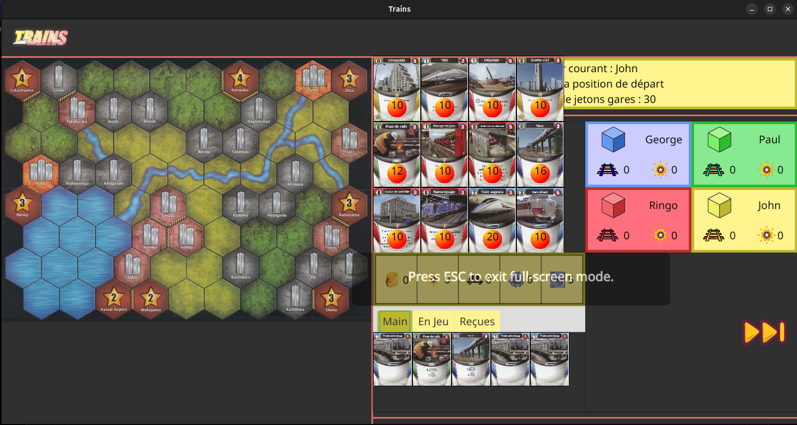
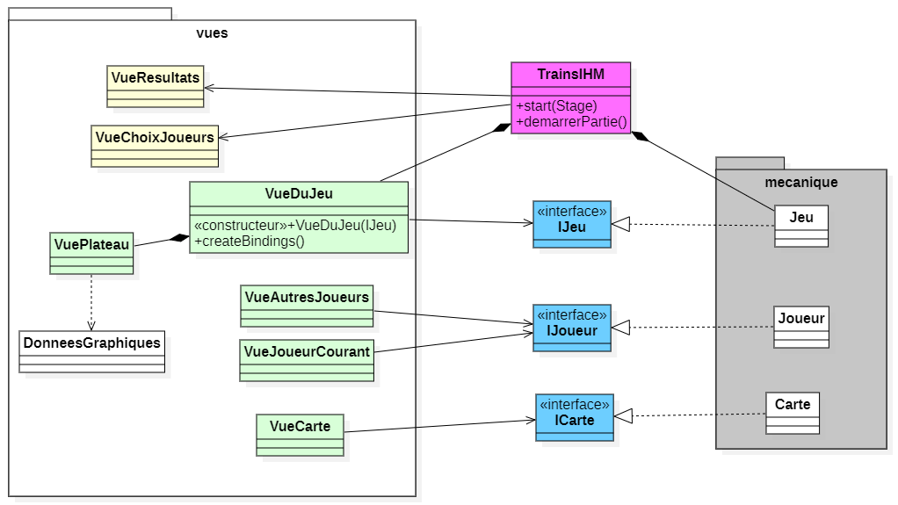

Qu'est-ce que Trains
Le projet Trains est une application de jeu de plateau en Java. Le jeu consiste à construire des lignes de trains entre différentes villes pour relier les gares entre elles. Le jeu utilise le module JavaFX pour l'interface graphique utilisateur.
Les apprentissages critiques
AC25.01 | Identifier les processus présents dans une organisation en vue d'améliorer les systèmes d'information
Niveau de maîtrise : acquisJ'ai identifié les processus de jeu de plateau pour concevoir le jeu Trains. J'ai appris à modéliser les règles du jeu en utilisant des diagrammes UML, et à implémenter ces règles en Java.
AC25.03 | Identifier les critères de faisabilité d'un projet informatique
Niveau de maîtrise : acquisJ'ai évalué la faisabilité du projet Trains en analysant les besoins des utilisateurs, les contraintes techniques, et les ressources disponibles. J'ai défini un plan de développement pour le projet en tenant compte des contraintes de temps.
AC25.04 | Définir et mettre en œuvre une démarche de suivi de projet
Niveau de maîtrise : acquisJ'ai suivi une démarche de développement itératif pour le projet Trains. J'ai défini des objectifs à court terme, et j'ai planifié les tâches à réaliser pour atteindre ces objectifs. J'ai évalué régulièrement l'avancement du projet pour ajuster le plan de développement.